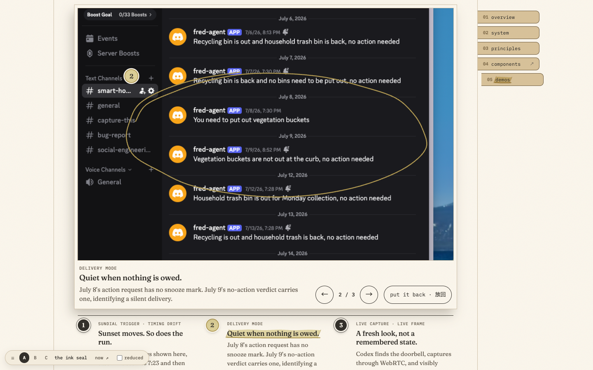
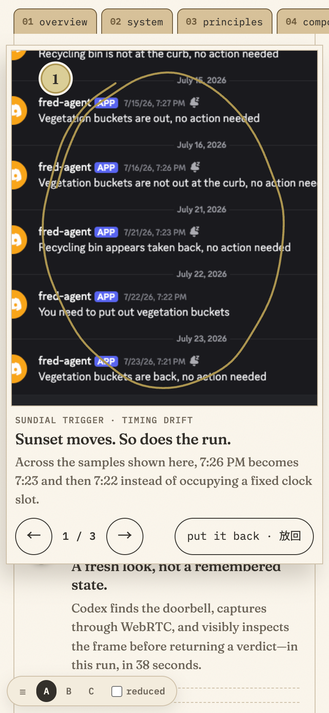
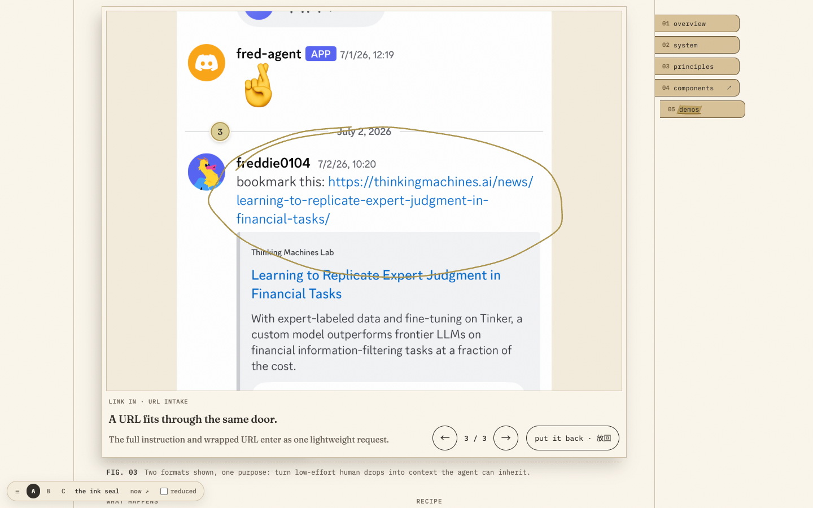
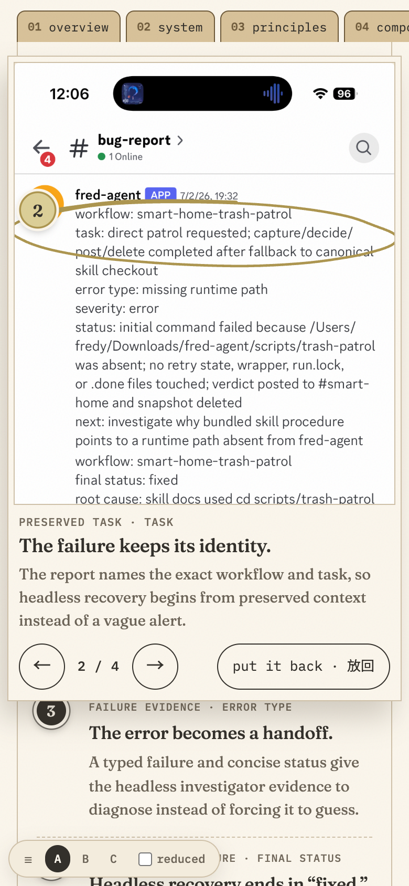
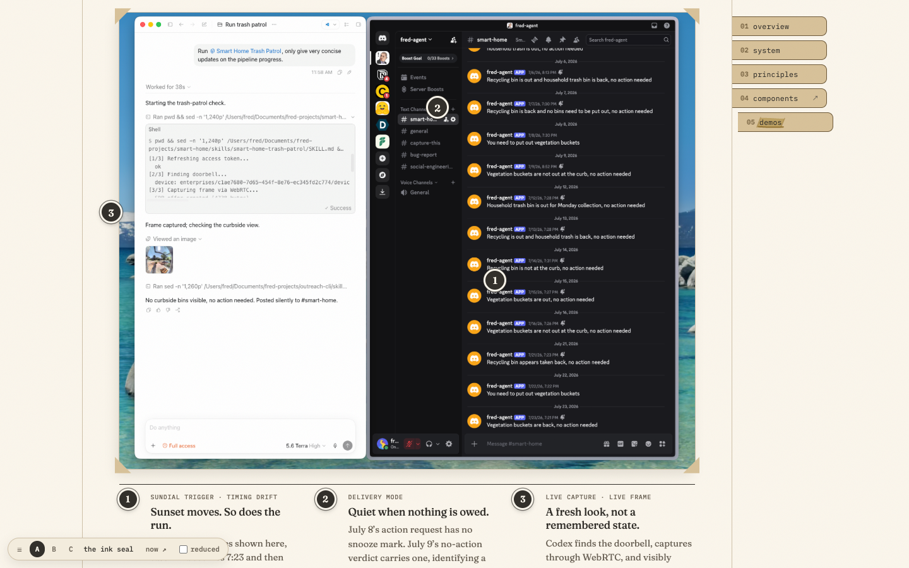
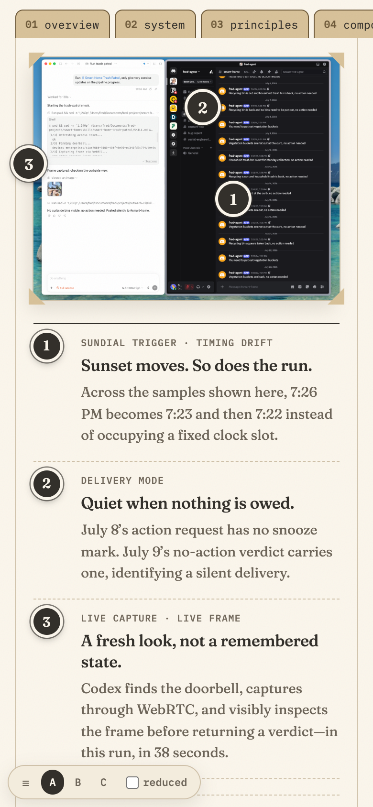
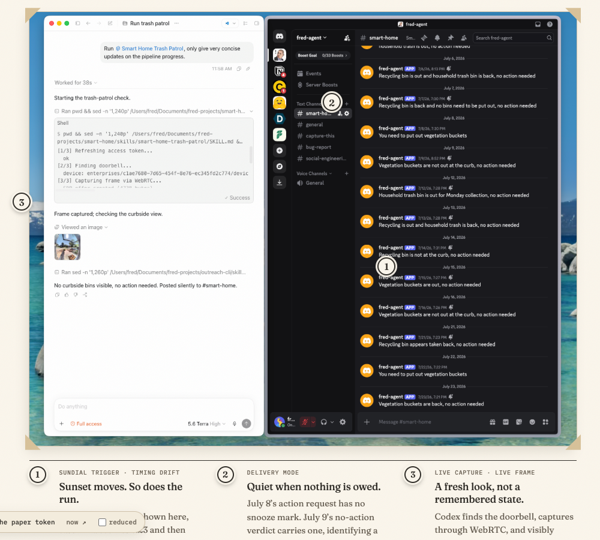
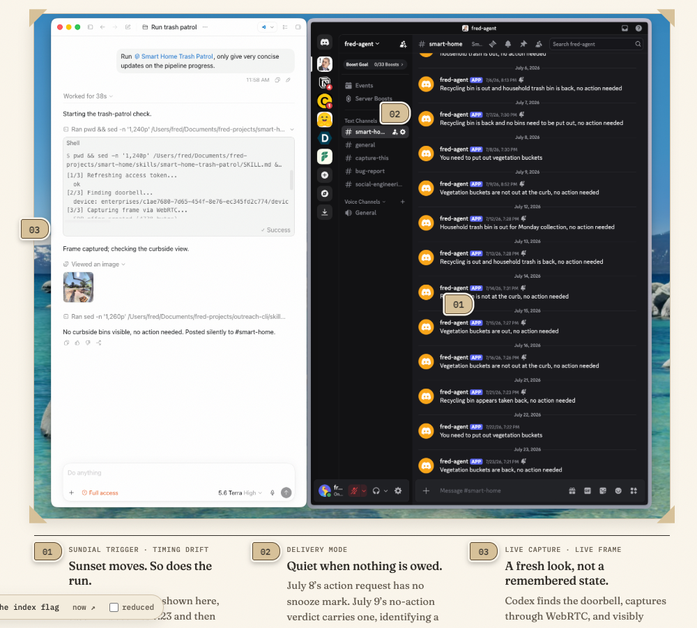
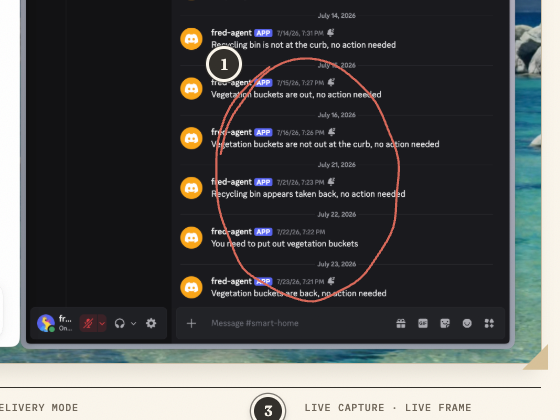

design/2026-09-building · round 3 · C 档案, the dossier · Demos
Demos, round 3: the enlargement lies over the capture, and the markers are hard to miss
Round 2 put three focus treatments to Fred (r2-02-demos-board.html), and F3, the enlargement, won on phone readability. Fred's call on Q3, in his words:
For Q3 we need enlargement, but maybe directly overlay on the original image and give the <- -> option to rotate between options. Note that the rounded number are not big enough and can easily get ignored with the images.
This round answers both points. Choosing a marker or a note lays the enlargement over the capture itself, inside the capture's own frame, and nothing on the page moves. ← → step through the capture's regions with a counter. The numbers are now seals, big enough to find on any screenshot, light or dark. The exhibits, the recording behind its poster and the comparison are unchanged from round 2.
Live: r3-demos.html?m=a, with markers A, the ink seal (recommended) · ?m=b B, the paper token · ?m=c C, the index flag · round 2's F3 for comparison, r2-02-demos.html?f=3. The switcher in the page's lower-left corner changes the marker; "reduced" previews reduced motion.
1 · The enlargement, in place




- Where. The enlargement covers the capture's frame: the print in Fig. 02, and the whole contact sheet in Fig. 04, so ← → can walk across its three prints. Fig. 03's print alone is already at size at desktop widths, so there the frame includes the legend beside it. On a phone the enlargement spans the screen, 8 px from each edge, and lies over whatever follows the capture instead of pushing it down. If the capture is half off the screen (you chose a note far below it), the page scrolls just far enough to show the whole enlargement under the tab strip.
- What it shows. A paper print whose margin covers the photo corners, so its window sits exactly where the capture was. Inside the window, the region at size with its number in the wheat band and the pen's wheat loop around it. Under the window, the region's note: its key, title and text, then ← n / N → and "put it back · 放回". The note area keeps the height of the capture's longest note, so stepping never moves the window's edges.
- How large. As large as fits the window, but never smaller than the size at which the capture's small text reads, and never larger than the image holds up. Each capture carries its own range, in CSS px per image px: 0.85–1.25 for the Trash Patrol and skill-file captures, whose 12–15 px UI text lands at 9–19 px, and 0.3–0.55 for the phone captures, whose ~44 px body text lands at 13–24 px. At desktop widths the capture's whole width always fits. On a phone the floor holds and the window pans: drag it, or use ↑ ↓.
- Motion runs on the physics clock and moves only transform and opacity. Open: the enlargement grows out of the region's own place on the capture. At the first frame its region lies exactly over the region at rest (0.0 px off for all ten regions), then it springs out with one small overshoot (k 220, c 22: 534 ms, 3 %). Step within a print: the window pans across the capture to the next region (240 / 24, 2 %). Step to another print (Fig. 04): the next print grows into the window from its own place on the contact sheet. Close: it tucks back into the region it shows (250 ms) and is gone. Each time it lands, the wheat loop draws once on the pen's clock. An interrupted move restarts from where it visibly is. Under reduced motion every state lands at once.
2 · Markers you can't miss
Every variant carries its own contrast, so it reads on any screenshot. The mark takes one value and its numeral the other, and a paper halo ring separates the mark from whatever is under it. The legend uses the same mark at 28 px, so each number on the capture visibly pairs with its note. There's no coral at rest. Noticing a marker (a mouse) or an entry (a mouse or keyboard focus) has the pen loop the region in coral, and an open region takes the wheat band. Below, each variant sits live on three real patches of the captures, at the size it has on the page at 1440.
Recommended: A, the ink seal
- It's the only variant that separates by value in both directions. The ink disc stands out against light UI, the paper halo against dark UI, and the ink hairline outside the halo keeps even the halo visible on white. Discord's background in these captures (#1A1A1E) is darker than the ink itself, so on Discord the halo does the work, which is what it's there for.
- It reads as the print's own numbering, not as part of the screenshot. A 30 px round seal with a 15.5 px Fraunces numeral looks like nothing a UI draws. B's paper disc on light UI is held only by its ring, and at a glance it reads like one more round avatar or button. C's kraft flag borrows the dossier's own tab and is the least like an avatar, but it's wider, covers more of the capture, and "01" reads more slowly than "1".
- Sizes: 30 px at desktop widths (38 px with the halo) and 32 px on phones, each with an invisible target of 46–48 px. Where two marks would overlap on a small print (Fig. 04's 2 and 3 on a phone), the later one steps along its region's top edge. While the enlargement is open, the capture's marks are hidden under it.





3 · Two captions for Fred to approve
Round 2 drafted both captions for F3, which slid the enlargement out below the capture. These are redrafted for the enlargement laid over the capture, with ← →. They're already on the page.
| Round 2 (F3's slide-out) | Round 3 (in place, ← →) | |
|---|---|---|
| Fig. 02 | The numbers on the capture are the notes below it. Choose one to look closer; Esc puts it back. | The numbers on the capture are the notes below it. Choose one to read it at size, in place; ← → step to the next, and Esc puts it back. |
| Fig. 04 | The numbers mark the auto-investigation rule and the task → error → fixed loop; the second report shows the same recovery pattern again. | The numbers mark the auto-investigation rule and the task → error → fixed loop. Open one and ← → walk the loop in order; the second report shows the same recovery again. |
4 · Keyboard and touch
| Input | What happens |
|---|---|
| Tab | One stop per region: the legend entries are the controls (button, aria-expanded, aria-controls → the enlargement). The markers on the capture are for pointers and touch, hidden from assistive tech. Focus shows the pen's coral 「 」 and loops the region. |
| Enter / Space, click, tap | Opens the enlargement and moves focus into it; it announces "Enlargement 2 of 3: Quiet when nothing is owed." Choosing another entry or marker while it's open steps to that region; choosing the open one again puts it back. |
| ← → | In the enlargement: the previous and next region of the same capture, wrapping around; the counter reads "2 / 3" and the new region is announced. On the legend entries, ← → ↑ ↓ move between entries. |
| ↑ ↓ | In the enlargement, pan its window when the region is larger than the window. |
| Tab inside it | ← , →, "put it back · 放回". The window isn't a tab stop of its own. Entries it covers (Fig. 03 at desktop widths, and on a phone the ones under it) are inert while it's open. |
| Esc, "put it back", a click or tap outside | It tucks back into its region and focus returns to the entry (from the keyboard, the entry is scrolled into view if it's off the screen). A click outside returns focus only if focus was inside the enlargement, and never takes it from what you clicked. |
| Swipe left / right | Steps. On the note, always; inside a window that pans sideways, only once it's at its edge, so a pan is never taken for a step. Vertical swipes scroll the window, then the page. |
| Mouse drag | Pans the window when there's more to see; a drag that ends outside doesn't close it. |
| Reduced motion | Every state lands at once: no spring, no pan, no draw. |
5 · For the port
- The zoom tier. The enlargement's image is the only thing that fetches the zoom tier (PR E's full-width q90 JPEG), and only when an enlargement opens. Until the tier arrives, the display image already in the print stands in at the same place, so opening never waits on the network. The mock uses the live PNG.
- Each capture's size range (
data-zoom="lo hi") goes into the evidence data, beside its width and height. - Found on the way: the pen's loop can widen a phone page.
Pen.annotatedraws into an svg with no size, and an unsized svg is 300 × 150. Round 2's region loops near the right edge made its phone page 568 px wide, so the page could be dragged sideways (nothing a screenshot shows). This board sizes those svgs to their host in its own CSS. Production's callers (lib/reading/rail.js,slip.js,lib/writing/pull.js) are worth a check. - Also found:
hide()on a loop that never showed sweeps it through visible. After a build or a resize, the stroke's offset sits at "hidden before the start", and erasing from there passes through fully drawn. Round 2 hid every loop on every change, so choosing region 1 swept loops 2 and 3 through coral once. This board hides only a loop it showed;pen.jscould start the erase from the far side instead.
Known gaps in this board
- While open, Fig. 03's enlargement covers its own legend at desktop widths. Its note is in the enlargement, and ← → reach the others.
- On a phone the enlargement lies over the notes after the capture (most of Fig. 02's legend). They're inert until it's put back.
- There's no pinch-to-zoom inside the window; a pinch zooms the page, as it always does.
- Closing during a step finishes the step at once, then tucks the enlargement back.
- The recording's play button and the comparison are round 2's, untouched.
Question for Fred (Q3, round 3): should Demos ship the enlargement laid over the capture, with markers A (the ink seal, recommended), B (the paper token) or C (the index flag)? And do the two captions in §3 stand as written, or do you want to edit them?